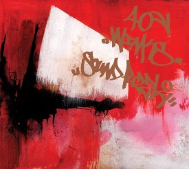

")
")
")
")
")
")
")
")
")
")
")
")
")
")
")
")
")
")
Sound Puzzle

format: CD / 12"
release date: January 16th 2007
label: Merck Records
Design by Inmo (Tag by Rarekind)
Mastered by G.Murder for Inmo
Produced and mixed by weedy and padmo'
snippets: download (1,9MB)
video: melancholia (bonus track)
- goodmorning (intro) 2:24
- new day (introlude) 0:50
- sketch * 2:54
- go ahead bobby (interlude) 1:37
- progress * 1:57
- welcome to paradise island (interlude) 1:11
- for the traveller * 3:19
- egyptian love poems 3:22
- it's here * 3:47
- you (interlude) 2:00
- i bring you dreams 2:31
- divine intervention (interlude) 1:51
- planet anvers * 4:19
- picture this 3:38
- soulful sensitivity3:48
- mind lost (interlude)2:23
- one button *2:35
- old train *2:24
- way past bedtime (outro) *3:24
- melancholia (bonus)4:35
* = available on 12" sampler
Available in a store near you.
Also online at:
- hiphopvinyl.de - CD & 12" sampler (Germany)
- Merck Records (US)
- Warp Records (UK)
- u-cover (Belgium)
- Juno Records - CD & 12" sampler (UK)
- Smallfish Records (UK)
- Boomkat (UK)
- Bent Crayon - CD & 12" sampler (US)
- Zoo Records (Hong Kong)
- Cisco Records (Japan)
- Pastel Records (Japan)
- Linus Records (Japan)
- diskUNION (Japan)
- normanrecords - CD & 12" sampler (UK)
- HMV - CD & 12" sampler (Japan)
- DARLA.COM (US)
- Forced Exposure (US)
- Parasol Records
- Other Music (US)
- Amazon (Germany)
- ...
Reviews: El Keter (Okayplayer), Boomkat - CD (english), Boomkat - 12" (english) Beyondjazz (english), AIRs:BLOG (japanese), Smallfish Records (english)